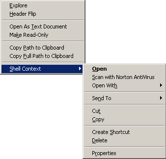

The File Context Menu is accessible by right-clicking on a file in the Workspace File Open or Global File Open file lists or by selecting Current File from the File Open, Global File Open, or Find Tag dialogs.
Selecting Explore will open a Windows Explorer view in the same directory as the file.
Selecting Header Flip will perform a standard header flip on the selected file.
Certain files, such as .rc or .dsp files, can be opened as text documents. Choose Open As Text Document to open the file as a text document.
Depending on the state of the file, the Make Read-Only option may read Make Writable. Use this option toggle the read-only state of the file.
To retrieve the path of the filename (excluding the file title and extension) in the clipboard, choose Copy Path to Clipboard.
To retrieve the full path of the file (including the file title and extension) in the clipboard, choose Copy Full Path to Clipboard.
The standard Windows shell context menu is also available through the Shell Context menu item.